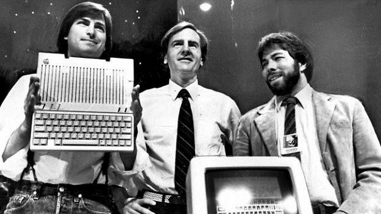
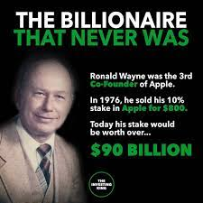
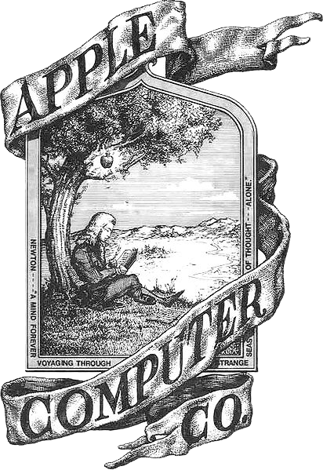
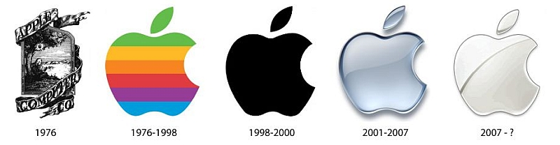
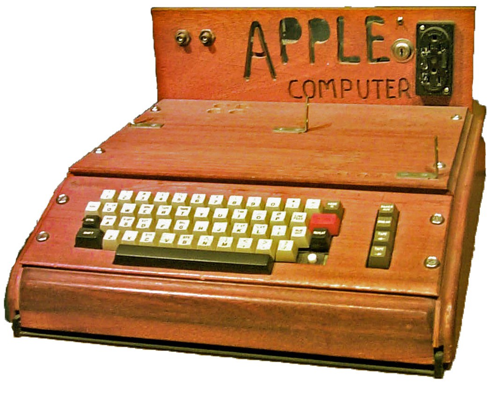
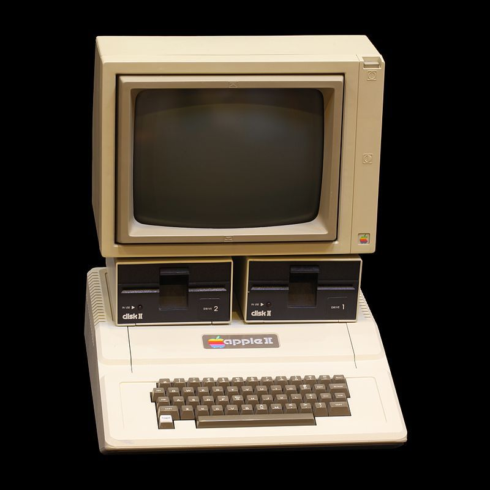
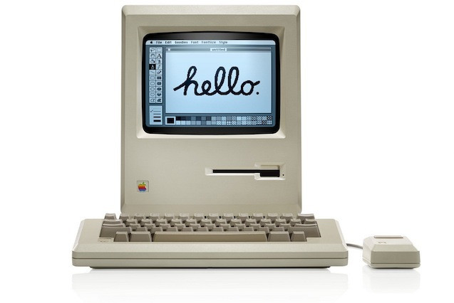
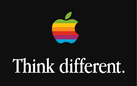

Apple
welcome to my website about apple

First steps of the company
More than 40 years ago apple computer inc. was invented by three three friends Steve Jobs, Steve Wozniak and Ronald Wayne.

Ronald wayne
Ronald wayne sold his 10% share for 800$ which today would be worth even 100 billions of dollars.

name of the brand
People speculate that it might came from “apple records” or from the apple orchard where steve jobs was working.

logo
The first logo was invented by the Ronald Wayne but luckily in the 1977 Steve Jobs ordered logo a simpler logo

first computers
The first two computers “Apple I” and “Apple II” were a huge success.


macintosh
Macintosh 128k was a success in the 1984 after few unsuccessful tries.

slogan
“Think different” even if apple doesn’t use this slogan yet it is still very remembered by many people.

Steve wozniak and Steve jobs
In 1985 Steve Wozniak leaves apple.
In 2011 Steve jobs died leaving his company for Tim Cook.

The End
Thanks for your attention.
website by Szymon Lebda-Wyborny